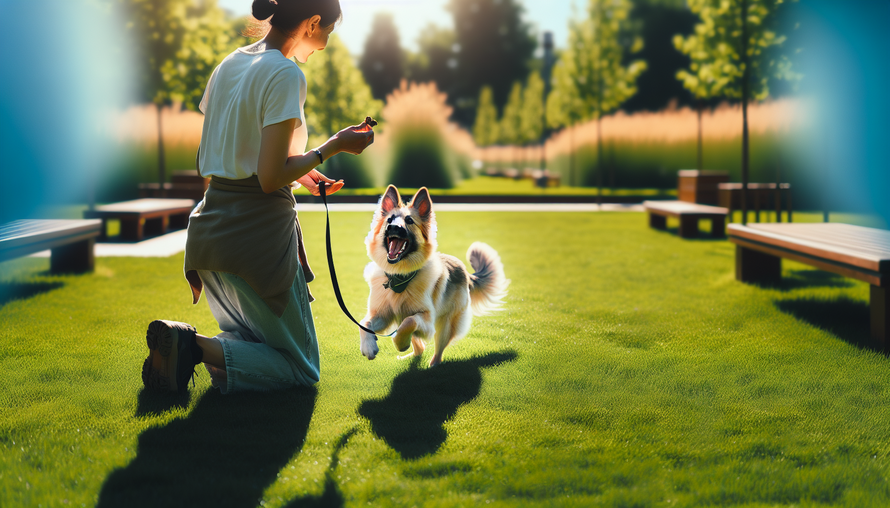

A strong recall, or teaching your dog to come when called, is one of the most important skills your dog will ever learn. It is not just a convenient cue for the backyard or dog park. It is a safety behavior that can prevent your dog from running into traffic, approaching wildlife, or getting lost. For new puppy parents, rescue adopters, and experienced dog owners alike, reliable recall training can make daily life easier and far less stressful.
The good news is that dogs can absolutely learn to come happily and quickly when called. The challenge is that recall is not built through repetition alone. It is built through trust, motivation, consistency, and smart practice. If your dog ignores you, runs the other way, or only comes when they feel like it, you are not alone. Many dogs have simply learned that coming when called is less rewarding than whatever else they are doing.
In this guide, you will learn a science-backed, positive reinforcement approach to teaching recall that works for puppies, adult dogs, and rescue dogs. You will also learn what mistakes to avoid and how to build a recall that stays strong in real-world situations.
Recall is more than a basic obedience skill. It is a foundation for freedom and safety. A dog who comes when called can enjoy more off-leash opportunities, safer hikes, and more relaxed outings. A dog who does not have a reliable recall may need much more management to stay safe.
From a behavior perspective, recall also strengthens your relationship with your dog. Every successful repetition teaches your dog that listening to you leads to something good. That might be food, play, praise, access to fun, or the chance to return to exploring after checking in.
This is especially important for rescue dogs and newly adopted dogs. Many of these dogs are still learning that their new humans are predictable and rewarding. Recall training helps build that trust in a clear, positive way.
To teach recall effectively, it helps to understand why dogs do or do not respond. Dogs repeat behaviors that are reinforced. If your dog comes to you and gets a great reward, they are more likely to do it again. If your dog comes and the fun ends immediately, they may start avoiding you.
This is why positive reinforcement is so effective. Instead of punishing your dog for being slow or distracted, you create a history of great outcomes for responding to their cue. Over time, your recall word becomes powerful because it predicts something your dog values.
Choose one recall cue and use it consistently. Common choices include:
Try not to repeat the cue over and over. If you say “come, come, come” while your dog ignores you, the cue starts to lose meaning. Instead, teach the cue carefully so your dog understands that hearing it once means running to you pays well.
The best place to begin is indoors or in a quiet, fenced area. Your goal at first is not to test your dog. It is to help them succeed. Start when your dog is mildly interested in you and not deeply distracted.
Here is a simple step-by-step process:
Keep sessions upbeat and brief. For many dogs, three to five minutes is plenty. End while your dog is still engaged and successful.
Use rewards your dog truly loves. For some dogs, kibble is enough indoors. For others, especially rescue dogs or easily distracted adolescents, you may need chicken, cheese, freeze-dried meat, or a favorite toy. The higher the distraction, the better the reward should be.
If you want your dog to come every time, your recall needs to compete with the environment. Smells, squirrels, other dogs, and open space are incredibly rewarding. Your job is to make returning to you feel just as exciting, or at least consistently worthwhile.
One of the best ways to do this is with jackpot rewards. Occasionally give several treats in a row, a short tug session, or enthusiastic praise when your dog comes quickly. This creates anticipation and keeps the behavior strong.
Also remember that rewards do not always have to mean the fun ends. In fact, one of the smartest recall strategies is to call your dog, reward them, and then release them back to what they were doing when safe. For example, if your dog is sniffing the yard, call them, reward them, and then say a release word like “go play.” This teaches your dog that coming to you does not always mean losing freedom.
You can also play recall games to build enthusiasm:
Games help your dog see recall as fun, not formal.
Many dogs seem to know recall inside the house but forget everything outside. That is normal. Dogs do not generalize well, which means they need to learn the same cue in many different places before it becomes reliable.
This is where a long line is invaluable. A long line, usually 15 to 30 feet, allows your dog to explore while keeping them safe and preventing rehearsal of ignoring you. Attach it to a harness, not a collar, to reduce the risk of injury.
Practice in gradually more distracting places:
Call your dog when you think they are likely to succeed. If they are staring at a squirrel or charging toward another dog, that is probably too hard. Build up slowly. Every successful repetition strengthens recall. Every ignored cue weakens it.
If your dog does not respond, avoid repeating the cue. Instead, gently use the long line to guide them back, then make a note that the environment was too distracting or the reward was not valuable enough. Training information like this is useful, not a failure.
Even dedicated dog owners sometimes accidentally make recall harder. Avoiding these common mistakes can dramatically improve your results.
One especially important point: never punish your dog for finally coming to you. If your dog takes 30 seconds to return and you scold them, they learn that approaching you is risky. Always reinforce the return, then adjust your training plan for next time.
Puppies often learn recall quickly because they naturally want to stay close, but they also have short attention spans. Keep training playful and frequent. Use mealtimes, hallway games, and short backyard sessions to build the habit early.
Rescue dogs may need extra patience. Some have little training history, while others may be fearful, overstimulated, or still adjusting to a new home. Focus first on relationship building. Use gentle encouragement, predictable rewards, and low-pressure practice. Do not rush to off-leash work.
Adult dogs who seem stubborn are often not being stubborn at all. More commonly, they have a stronger reinforcement history for ignoring the cue than responding to it. That can be changed. Go back to basics, increase reward value, lower distractions, and practice consistently. Dogs learn at all ages.
A reliable recall is not built in a week. It is the result of many successful repetitions across different environments, with different distractions, over time. Even well-trained dogs need occasional refreshers.
Ask yourself these questions before trusting recall off leash:
If the answer to any of these is no, keep practicing. There is no downside to using a long line longer than you think you need. Safety always comes first.
Some dogs may never be fully reliable off leash in every environment, especially around prey, wildlife, or intense social distractions. That is not a failure. Good training also means knowing your dog honestly and managing them wisely.
Teaching your dog to come when called every time is one of the most valuable investments you can make in their training. Reliable recall is built with positive reinforcement, smart setup, gradual progress, and lots of rewarding practice. Start easy, use high-value rewards, avoid poisoning the cue, and train in many different places with a long line before expecting real-world reliability.
Whether you are raising a puppy, helping a rescue settle in, or retraining an adult dog, recall can improve with the right approach. Be patient, keep it fun, and celebrate small wins. Every successful recall strengthens your dog’s trust in you and helps keep them safe for life.
If you want more step-by-step, science-backed training help, get our full Dog Training eBook series — new titles added weekly.